Alex O’Connell
Professor Liz Hogan
2152 – Technical Writing Online
14 September 2020
How to Set Up a Virtual Machine That Will Run Ubuntu
· The setup is essentially the same on any OS you are running but because I’ll be setting one up on a Mac, this manual will be catered to Mac users.
· You will first want to make sure you have a stable connection to the internet and enough hard disk space in order for the virtual machine (vm) to run efficiently.
· The first thing we’ll want to do is begin by downloading VirtualBox which is a popular choice when choosing a virtual machine.
· You’ll first want to use the link provided (https://www.virtualbox.org/wiki/Downloads) in order to download VirtualBox.
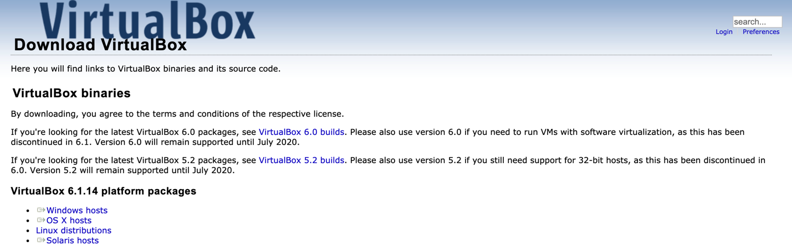
· The above image shows the prompt whenever you click on the link provided.
· Whatever operating system you are using to conduct this download, click on the corresponding link under VirtualBox 6.1.14 platform packages.
· Because this manual is more suited for Mac users, I will be downloading the OS X hosts option. There’s not much a difference but as stated previously, dependent on the operating system you are conducting the download on.
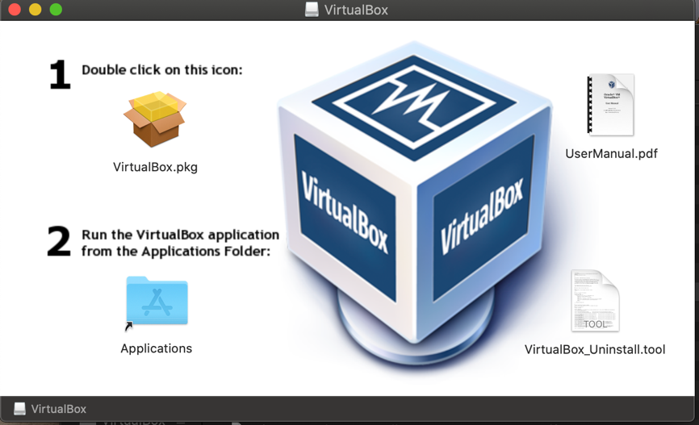
· Once the download is complete, find where the download was saved and double click on it. Once double clicked, you will be prompted with the above set of instructions which are pretty straightforward.

· The image above shows the prompt that will appear once you have located VirtualBox within your applications folder and double clicked on it.
· Now that we have established that we’ve successfully installed VirtualBox, we’ll want to begin downloading Ubuntu which is the OS we would like to run on this virtual machine.
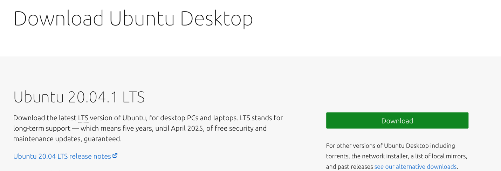
· Using the link provided (https://ubuntu.com/download/desktop), you’ll be taken to the website in which you’ll be downloading Ubuntu from.

· Once you click the download button, you will be asked where you would like to save the file. I chose my downloads folder since it would be easy to find and probably the most reasonable place to put it but that’s completely up to you. The download may take a couple of minutes but once it’s downloaded, you will be ready to start setting up your virtual machine.
· Now we will want to actually begin the process of creating a new virtual machine on your computer.
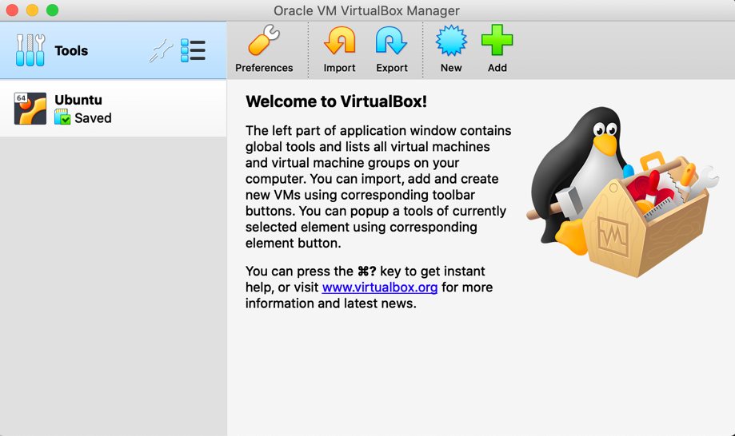
· Now that Ubuntu is installed, we’ll want to go back to VirtualBox and start the process of setting up the environment. The first step is to click on the blue star labeled ‘New’ in the picture above.
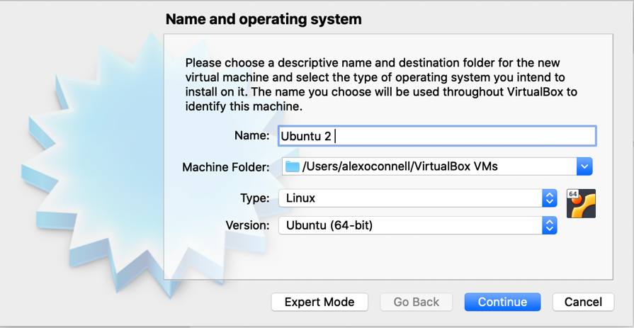
· Once you’ve completed the step above, you’ll be prompted asking what you would like to name the virtual machine. I already have a virtual machine named Ubuntu so I created a second one but when you name it Ubuntu it recognized the type Ubuntu will run on which is Linux and the version which is Ubuntu 64-bit. Once that’s been done, go ahead and click continue.
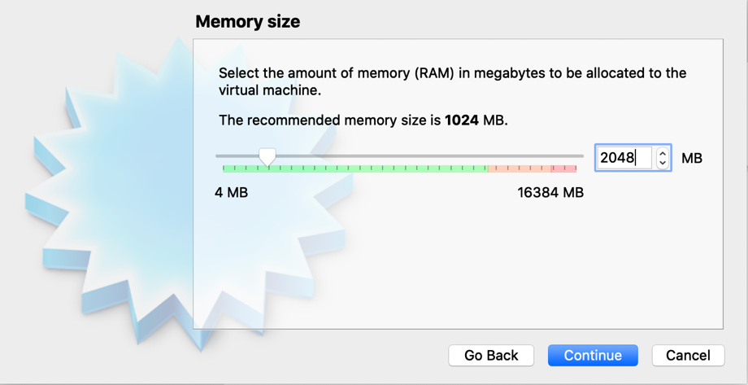
· Once you’ve pressed continue in the previous step, you’ll be taken to this page which wants to know how much RAM you would like to allocate for the virtual machine. The default amount it 1024 MB but I went ahead and changed it to 2048 MB. This number can be changed whenever the virtual machine is set up and isn’t set in stone so you can choose whatever amount you would like although it is not recommended you go past the red marking above. Go ahead and press continue once you’ve chose the amount of memory you would like allocated.
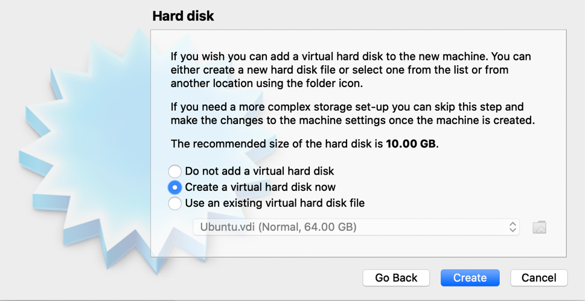
· After pressing continue, this window will pop up asking if you would like to create a virtual hard disk. The default option is to go ahead and create one and we’re just going to go ahead and leave that alone. Press create after you’ve made sure this is the option selected.
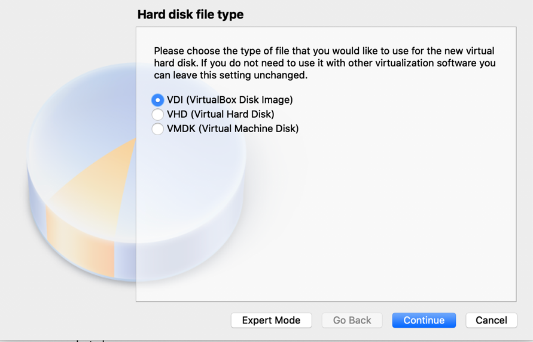
· After pressing create, the above window will appear asking if you would like to create a VirtualBox Disk Image which is the default option so we can go ahead and also leave that alone. Press continue when you’ve made sure this is the option selected.
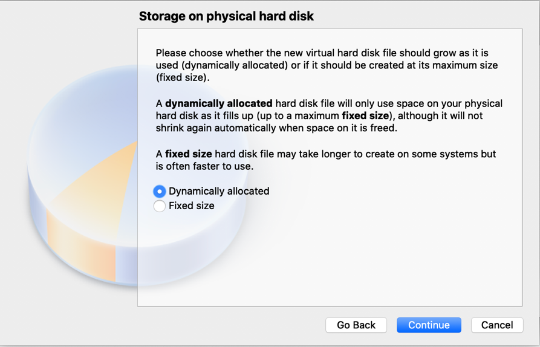
· Once the previous step has been completed, the prompt above will appear asking whether you want the hard disk to be dynamically allocated or set to a fixed size. We want to keep it at dynamically allocated which is the default option so once you’ve ensured that’s the option selected, press continue once again.
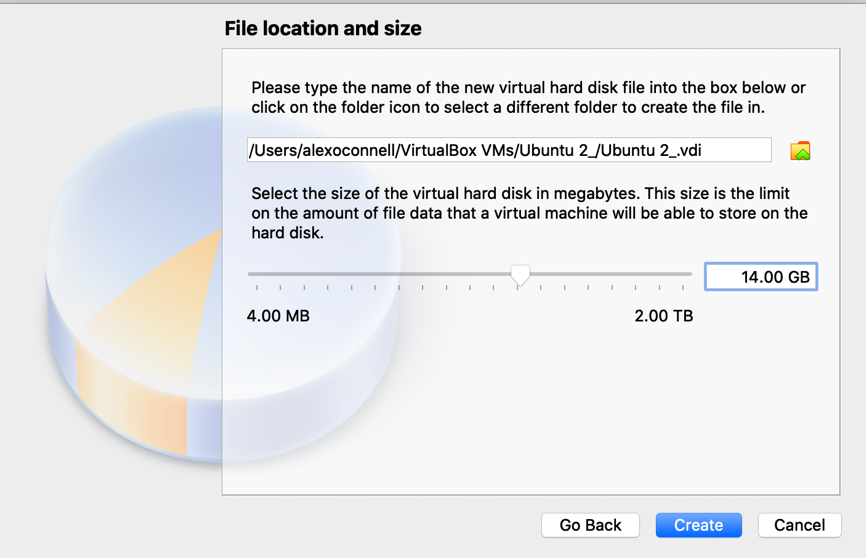
· After the last step, the next prompt will ask you where you would like to save your new virtual machine and the amount of hard disk space you would like to allocate for the virtual machine. The default path given is what you should leave it at but as for the amount of space you would like allocated, I set mine to 14 GB. The default option is 10 GB, but this number cannot be changed once the virtual machine is created so you don’t want to run into a situation where you run out of space so go ahead and give yourself some buffer, so this doesn’t happen. Fourteen gigabytes should be more than enough, so we’ll go with that. Press create when you have made necessary adjustments.
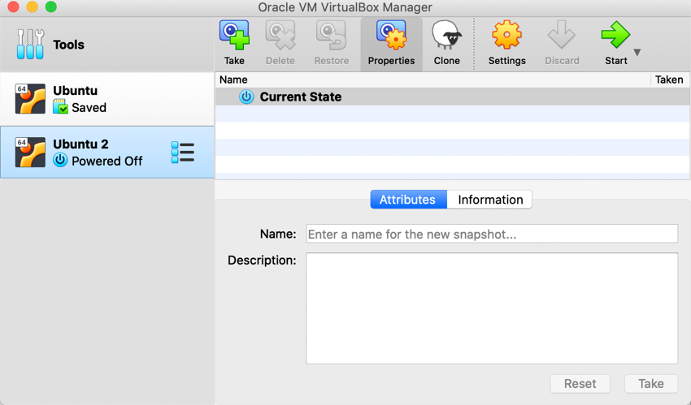
· After completion of the last step, you should now see your new virtual machine, in my case labeled Ubuntu 2. Now that it’s been created, we’ll want to go ahead and click on it, so it highlighted shown in the picture above. Once done, click the green arrow labeled ‘Start’ which will begin to run the virtual machine.
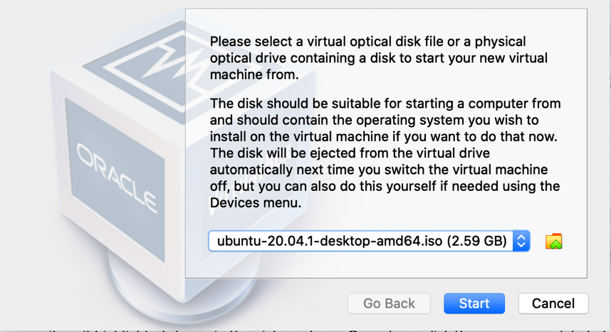
· After you have pressed ‘Start’, the above prompt will appear asking you which type of operating system you would like to load to the virtual machine. By default, the Ubuntu download should already be the option for us to load to the virtual machine. After making sure it’s the Ubuntu that we downloaded, press start so the virtual machine can load this specific operating system.
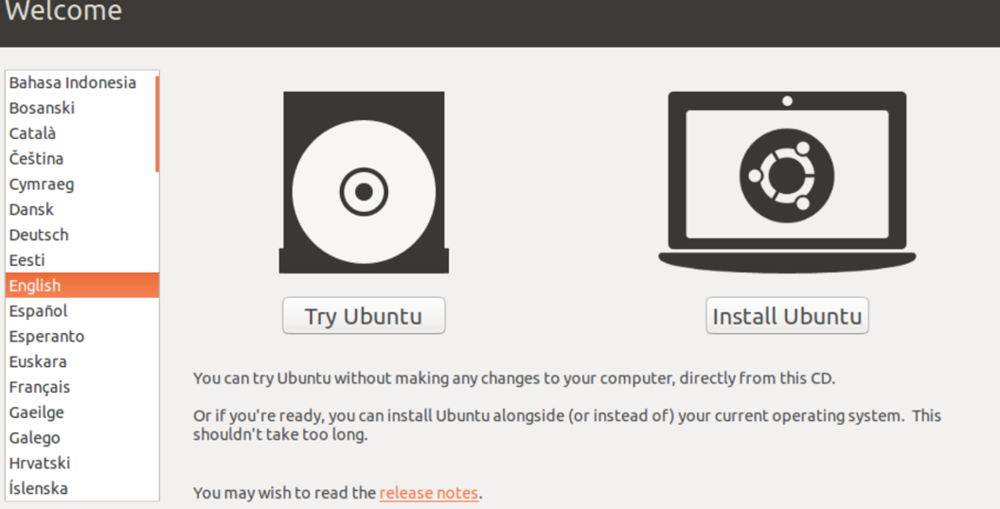
· Once the virtual machine has started to run, you’ll be brought to this screen asking you would language you would like the virtual machine to be in and asking if you would like to install Ubuntu. Select the appropriate language and then click on ‘Install Ubuntu’.
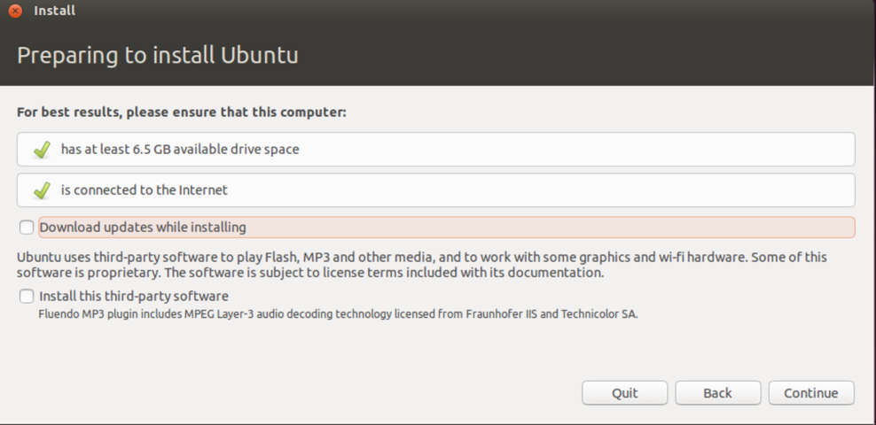
· Next you’ll be asked if you want to download any updated to Ubuntu while Ubuntu is in the process of being downloaded. We’ll want to click that option just to make sure we have all necessary updated and then press continue.
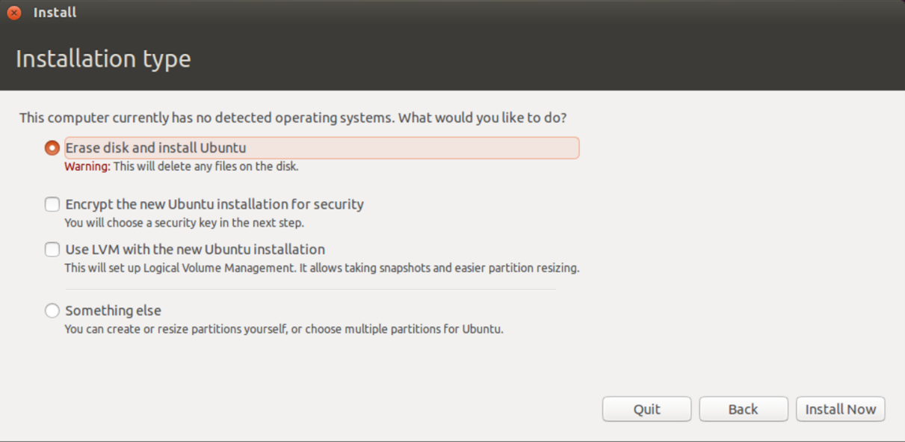
· The next prompt is just letting you know that you currently have no operating system running on the virtual machine and just ensuring that you want to load Ubuntu as the operating system. The option selected is the one you want to make sure you select and once you’ve made sure, press ‘Install Now’ in order to install Ubuntu.
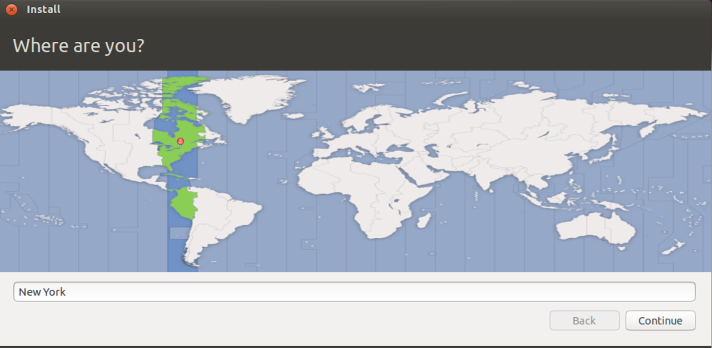
· Ubuntu will then want to know what time zone you are located in. The default is New York but I went ahead and left that alone because this can be changed once the virtual machine is set up. Press continue when you’ve selected the time zone you would like.
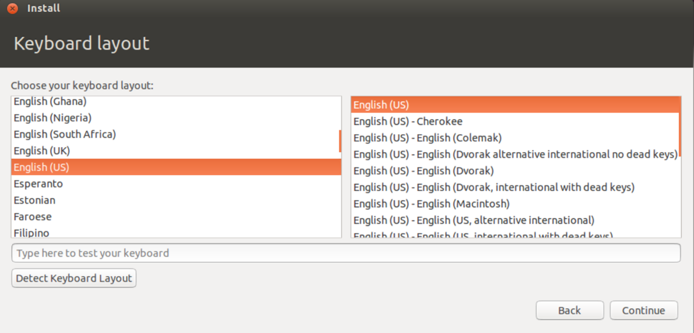
· The next prompt will just be what language you would like your keyboard layout to be. Choose the language appropriate for you but in this case, we’ll go with English and then press continue once you’ve chosen the appropriate language for you.
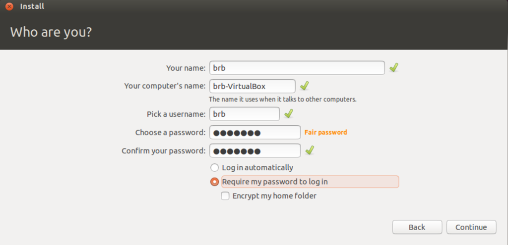
· I went ahead and marked out the preferred name and the name of the computer because it’s up to you (the user) what you would like this to be. It’s also not mandatory but you can create a password for the machine and have it something you would like to be prompted whenever you load up the machine. Once this information has been put in, press continue to move on.
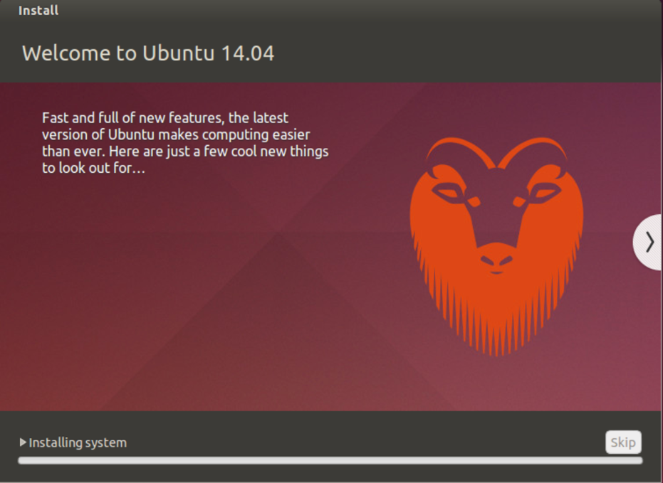
· Once the last step has been completed, Ubuntu will begin to download. This may take a couple minutes but when it’s done downloading you would have successfully set up a virtual machine that is running on the Ubuntu operating system. Once done downloading you’ll receive a prompt asking you to restart the machine and you’ll want to press ‘Restart Now’. This will then bring you back to the desktop of your newly installed virtual machine which is now running on Ubuntu.